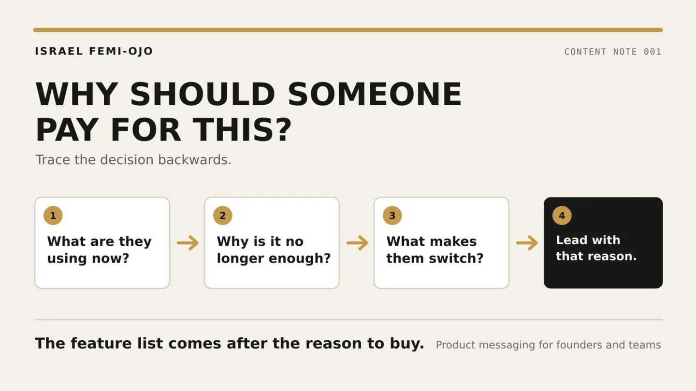

01AI evaluation
Can AI safely prepare a startup launch brief?
Six internal documents. Ten planted conflicts. Three models tested against the same evidence.
Read the case study Controlled test2026
Controlled test2026
AI content strategist · Abuja / Remote
Product research, messaging and content systems for AI teams.
Selected work
Six internal documents. Ten planted conflicts. Three models tested against the same evidence.
Read the case study
Controlled test2026
The connection worked. The import did not. Four small messages sent the test in the wrong direction.
Read the product reviewResearch, angles and repeatable workflows across AI campaigns, founder content and daily publishing.
See the content work
Product messagingContent note 001What I do
Test the experience. Check the promise. Find where trust breaks.
Find the reason to care, then build the page or content around it.
Turn one direction into clear briefs, campaigns and platform-ready work.
Experience
Content Strategist
AI product research, daily publishing, campaign direction and distinct account voices across a portfolio of technology brands.
Selected campaign work includes Tripo AI, OpenArt, CapCut and TopView.
Available for remote work